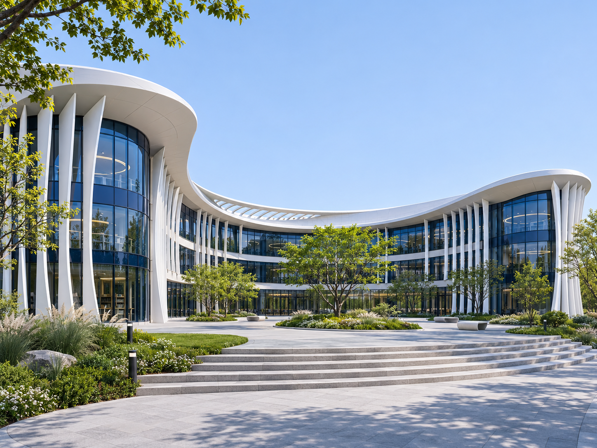
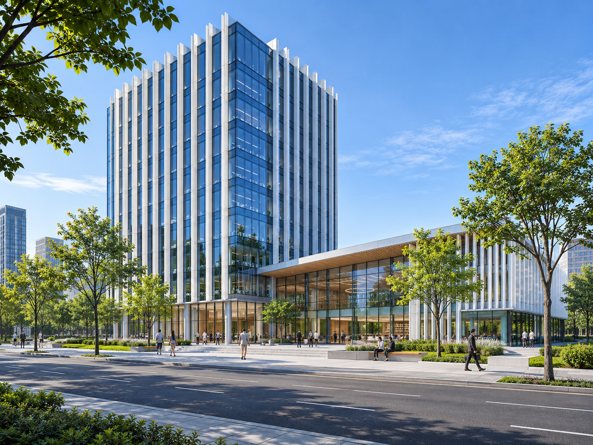

Технологические решения
Продумываем работу объекта: от взаимосвязи помещений до размещения оборудования.
Разрабатываем документацию для объектов с разными сценариями эксплуатации:
- кафе, ресторанов и пищеблоков — с учётом последовательности приготовления и обслуживания;
- магазинов и сервисных помещений — от приёмки до работы с посетителями;
- офисных и административных зданий — для ежедневной работы сотрудников;
- образовательных объектов — с учётом назначения учебных и вспомогательных зон.
В проекте связываем между собой:
- назначение помещений и связи между функциональными зонами;
- размещение оборудования, его характеристики и точки подключения;
- маршруты персонала, посетителей, сырья и продукции;
- требования к инженерному обеспечению для смежных разделов.
Состав документации определяем по назначению объекта, стадии проектирования и исходным данным.
Расскажите о вашем объекте — уточним задачу и предложим состав работ.
Получить консультацию
Как строится работа
- Разбираем задачу
- Фиксируем объём и условия
- Изучаем исходные материалы
- Готовим проектные решения
- Передаём документацию команде
Решения для объектов
Запросить примеры
У каждого объекта — своя технологическая схема
Для кафе важна последовательность производственных процессов, для офиса — организация рабочих зон. При обсуждении задачи покажем, какие материалы понадобятся для вашего объекта.
Изображение иллюстративное, не реализованный проект.Направления
Для каких объектов
разрабатываем решения
Работаем с планировкой и оборудованием в контексте реальных процессов. Объём разработки согласуем отдельно для каждого объекта.
01Предприятия общественного питания
Кафе, рестораны и пищеблоки. Функциональное зонирование, размещение технологического оборудования, движение сырья, готовой продукции и персонала.
02Торговые объекты
Магазины и торговые пространства. Организация приёмки, хранения и реализации товаров, размещение оборудования и вспомогательных помещений.
03Офисные и общественные здания
Функциональные связи помещений, рабочие места, зоны обслуживания и оборудование с учётом назначения объекта.
04Образовательные учреждения
Функциональные зоны и оборудование учебных и вспомогательных помещений. Состав решений уточняется по типу учреждения и заданию на проектирование.
05Другие объекты
Пришлите описание объекта и исходные материалы. Обсудим возможность разработки технологических решений и необходимый состав работ.
Результат работы
Документация,
с которой можно работать
Передаём согласованный комплект материалов для заказчика и смежных специалистов. Содержание и детализацию закрепляем в техническом задании.
Уточнить состав работ- Пояснительная записка
- Назначение объекта, описание процессов и обоснование принятых технологических решений.
- Технологические планировки
- Зонирование, размещение оборудования, рабочие места и необходимые проходы.
- Спецификация оборудования
- Перечень оборудования с характеристиками, необходимыми для проектирования.
- Схемы технологических потоков
- Организация перемещения людей, материалов и продукции — в зависимости от типа объекта.
- Задания смежным специалистам
- Исходные требования к инженерному обеспечению и привязкам оборудования.
Исходные данные
С чего начать
обсуждение проекта
Необязательно собирать полный комплект заранее. Пришлите имеющиеся материалы — недостающее уточним вместе.
Описание объекта и задача
Назначение, площадь, расположение, стадия проектирования и ожидаемый результат.
Архитектурные планы
Актуальные планы с размерами и экспликацией помещений. При наличии — материалы смежных разделов.
Требования к оборудованию
Перечень выбранного оборудования, технические характеристики или требования к производительности и рабочим процессам.
Сроки и формат документации
Желаемые сроки, стадия и требования к передаче файлов. Стоимость и срок определяем после изучения задачи.
Обсудить проект
Обсудим задачу
вашего объекта
Напишите, что планируете открыть или изменить, приложите план помещения и укажите стадию проекта. Это поможет предметно обсудить объём разработки.